Detached bungalow2 bedrooms
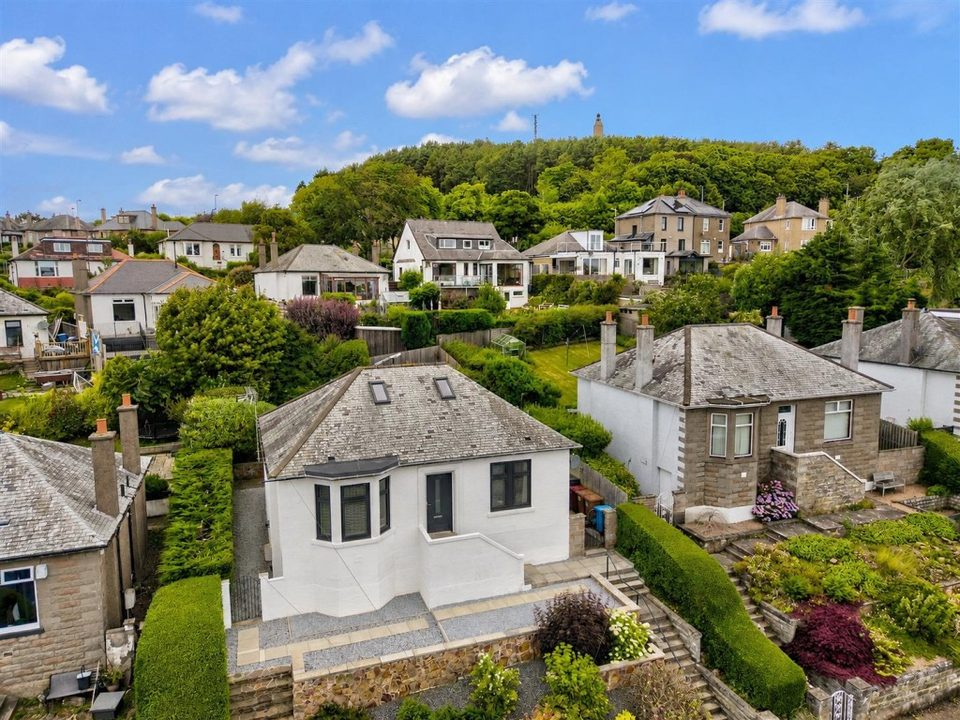
£240,000Offers over
12 Kinghorne Terrace, Dundee
Law
Approx. 1.1 miles · 24 min walk from Tip Top
Listed 6 November 2026 · Rosie Fraser Real Estate
Daily property watch
Homes for sale · 2–3 bedrooms · Up to £270,000
Updated 14 November 2026 · 7 new · 209 in the archive

Law
Approx. 1.1 miles · 24 min walk from Tip Top
Listed 6 November 2026 · Rosie Fraser Real Estate
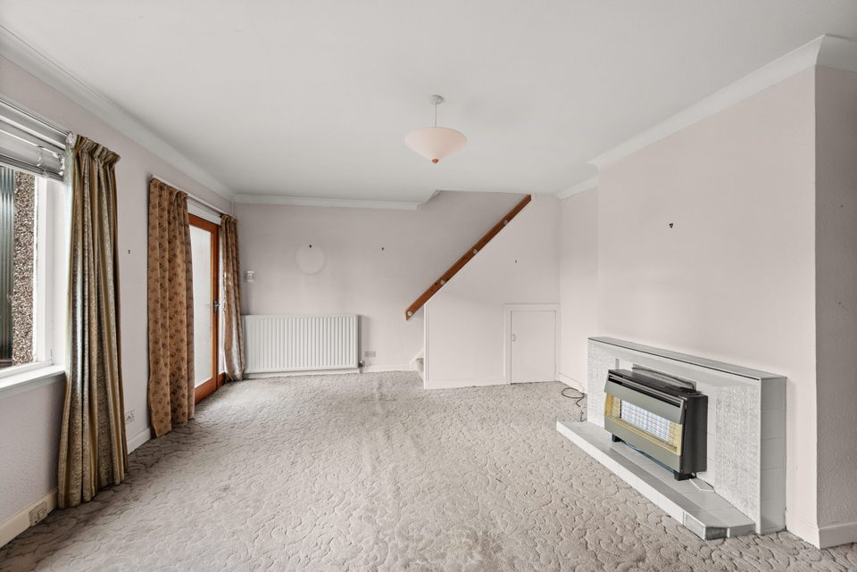
Broughty Ferry
Approx. 5.3 miles · 103 min walk from Tip Top
Listed 6 November 2026 · Verdala
Some modernisation would be beneficial.
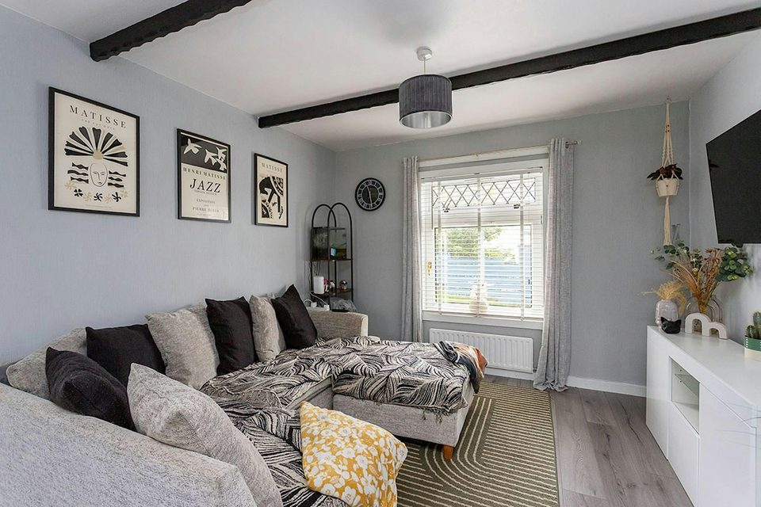
Menzieshill
Approx. 2.6 miles · 52 min walk from Tip Top
Listed 6 November 2026 · McEwan Fraser Legal
Rear garden ground is understood not to be included within the property title. A possible local-authority purchase would require separate terms.
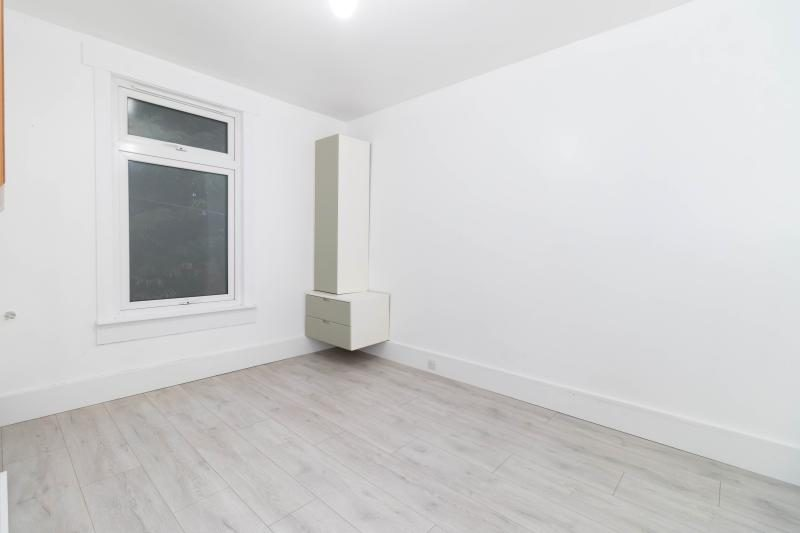
Area to confirm
Approx. 1.0 miles · 19 min walk from Tip Top
Listed 6 November 2026 · Yopa
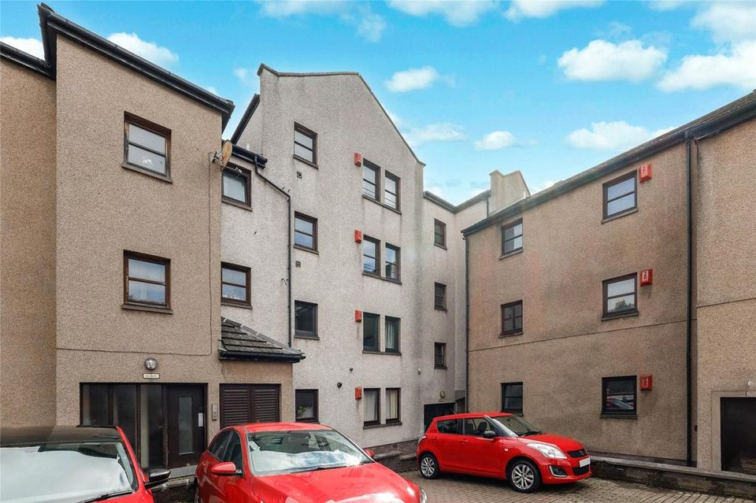
Area to confirm
Approx. 0.7 miles · 13 min walk from Tip Top
Listed 6 November 2026 · Slater Hogg & Howison
Original agent page unavailable; portal listing linked.
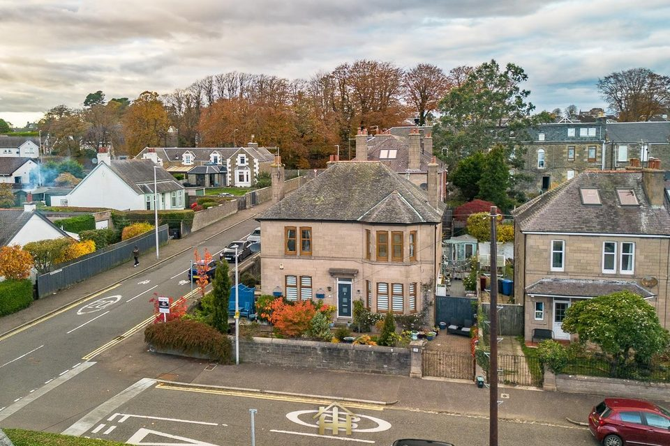
Broughty Ferry
Approx. 5.6 miles · 108 min walk from Tip Top
Listed 5 November 2026 · Harmony Homes
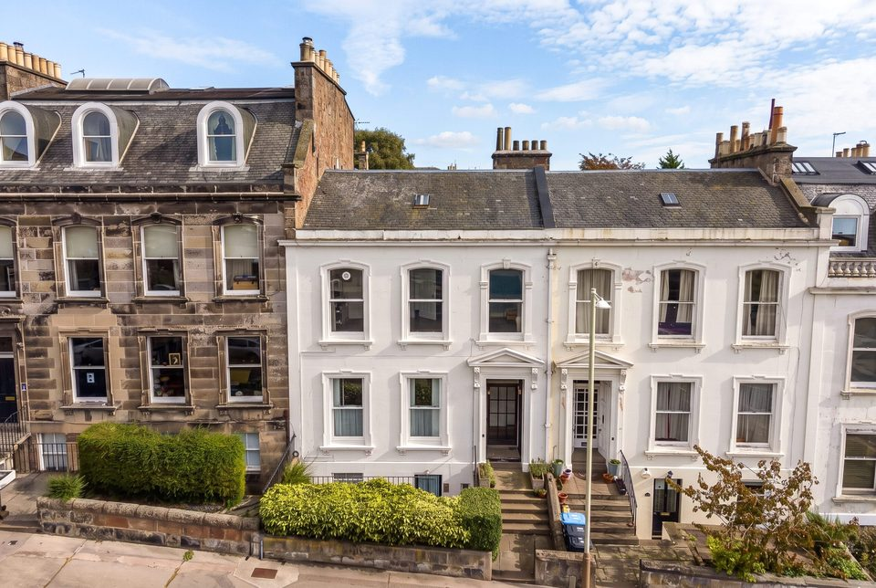
West End
Approx. 2.2 miles · 41 min walk from Tip Top
Listed 5 November 2026 · Verdala
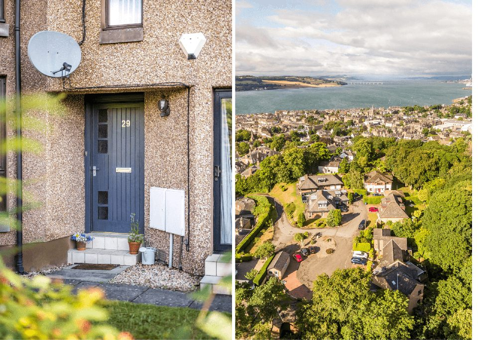
Area to confirm
Approx. 4.8 miles · 94 min walk from Tip Top
Listed 5 November 2026 · Verdala
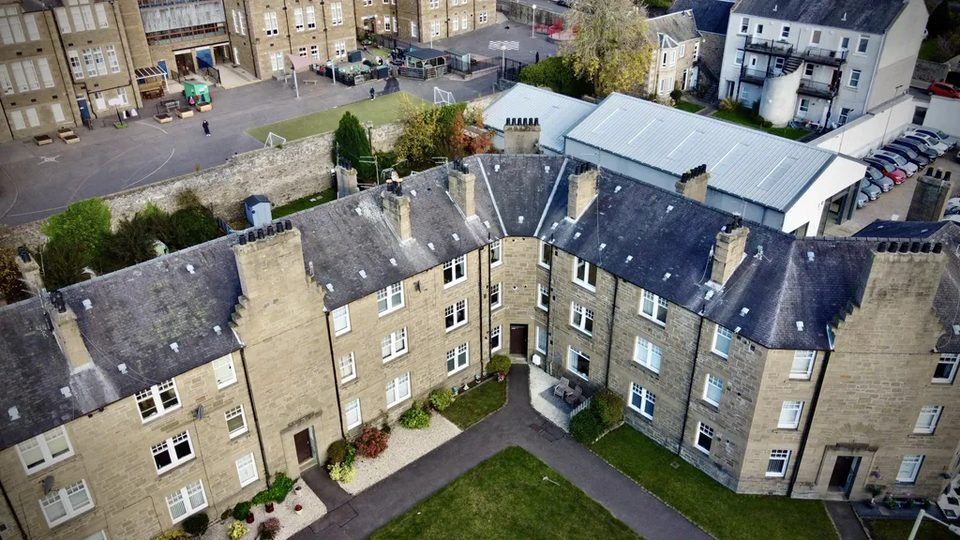
Broughty Ferry
Walking distance unavailable
Listed 5 November 2026 · Dymock Properties
Broughty Ferry
Approx. 4.4 miles · 85 min walk from Tip Top
Listed 5 November 2026 · Dymock Properties
Original agent page unavailable; portal listing linked.
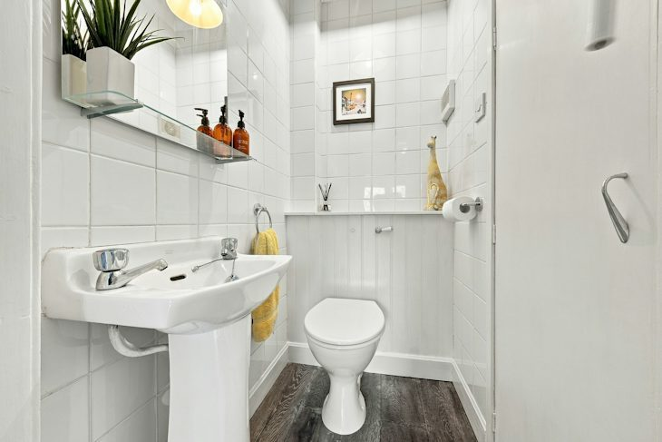
Broughty Ferry
Approx. 5.4 miles · 105 min walk from Tip Top
First seen 6 November 2026; listing date unavailable · Gilson Gray
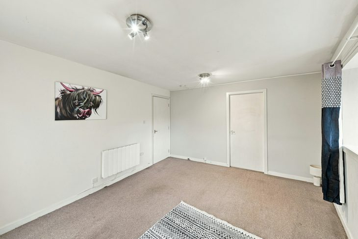
Area to confirm
Approx. 1.5 miles · 29 min walk from Tip Top
First seen 6 November 2026; listing date unavailable · Gilson Gray
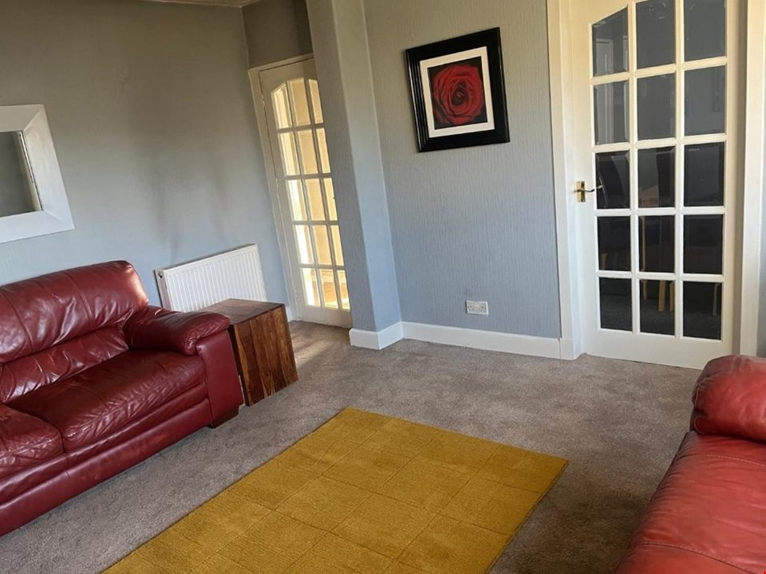
Area to confirm
Approx. 2.1 miles · 41 min walk from Tip Top
First seen 6 November 2026; listing date unavailable · Richmond and Co
Non-traditional construction.
Original agent page unavailable; portal listing linked.
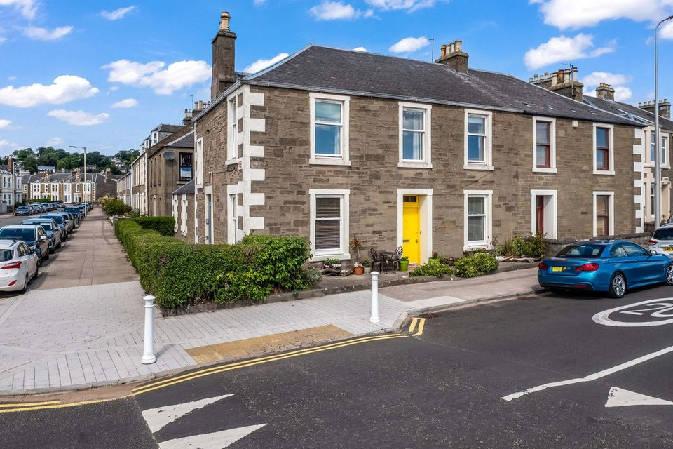
Broughty Ferry
Approx. 4.6 miles · 88 min walk from Tip Top
Listed 4 November 2026 · McIntyre Properties
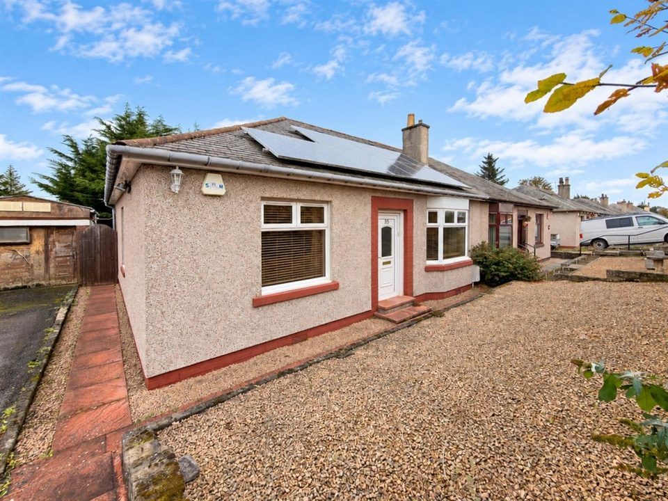
Area to confirm
Approx. 0.9 miles · 18 min walk from Tip Top
Listed 4 November 2026 · Rosie Fraser Real Estate
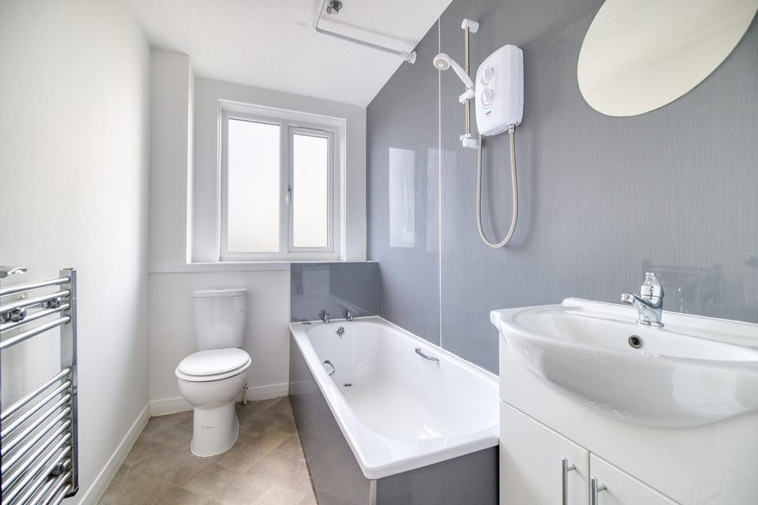
Area to confirm
Approx. 0.5 miles · 11 min walk from Tip Top
Listed 4 November 2026 · Tula Property
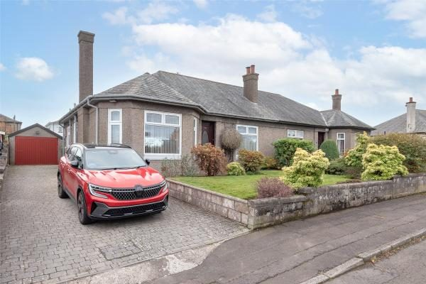
Area to confirm
Approx. 0.9 miles · 18 min walk from Tip Top
First seen 5 November 2026; listing date unavailable · Lindsays
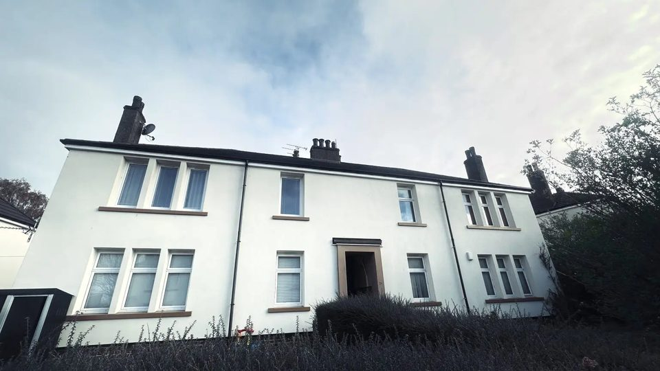
Area to confirm
Approx. 1.0 miles · 21 min walk from Tip Top
First seen 5 November 2026; listing date unavailable · The Chamber Practice
Complete renovation and modernisation required.
Area to confirm
Approx. 2.2 miles · 44 min walk from Tip Top
Listed 3 November 2026 · Axis Property
Original agent page unavailable; portal listing linked.
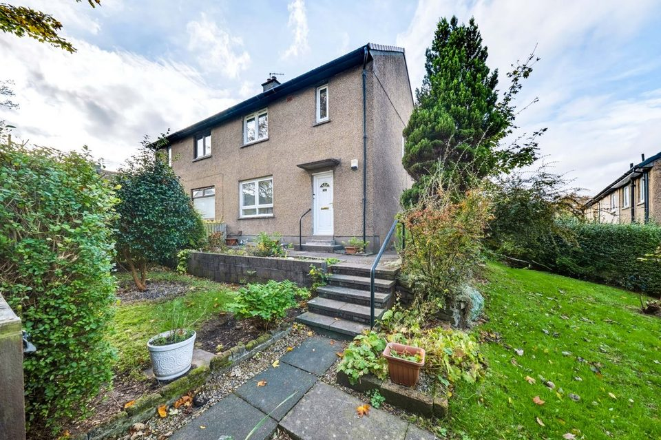
Area to confirm
Approx. 3.1 miles · 58 min walk from Tip Top
Listed 3 November 2026 · McIntyre Properties